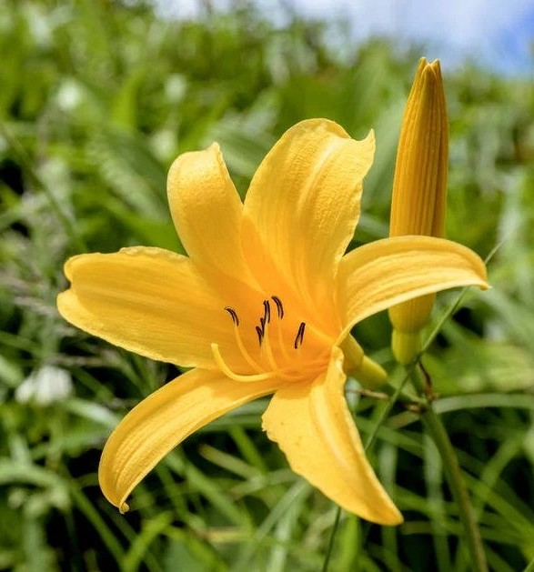

| 日程 | 行程 |
|---|---|
| 7月31日（金） | 移動日（東京・名古屋→白馬） 新宿駅西口16時30分集合 五竜ドライブステーション泊 |
| 8月1日（土） | 五竜DSを5時30分出発 栂池から白馬岳へ（大池ルート上り） 白馬山荘泊（個室予約済み）及びテント泊 ビーフシチューはCI時に申し込み要 |
| 8月2日（日） | 白馬岳から栂池へ（大池ルート下り） 白馬温泉入浴後帰路（白馬→東京・名古屋） |
8月14日発（15日山荘泊）/ 9月4日発（5日山荘泊）/ 9月12日発（13日山荘泊）
※7月29日（水）頃に天候判断の上、LINEにてヒアリングさせていただきます
※日程調整不可となった場合、キャンセル扱いとなり所定のキャンセル料が必要となります
＜白馬山荘の予約状況について＞